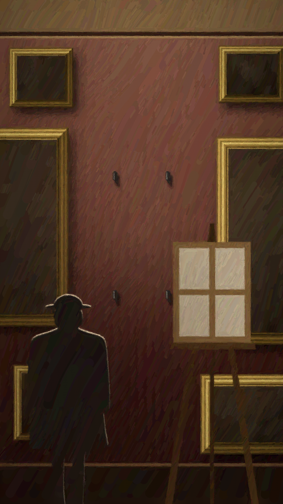
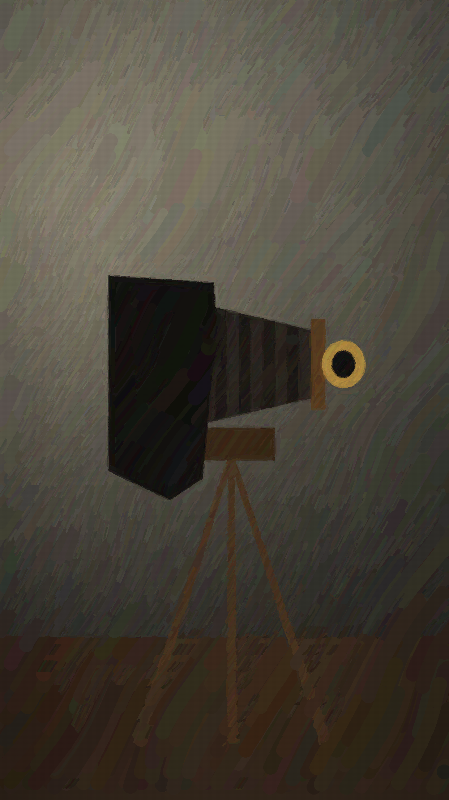
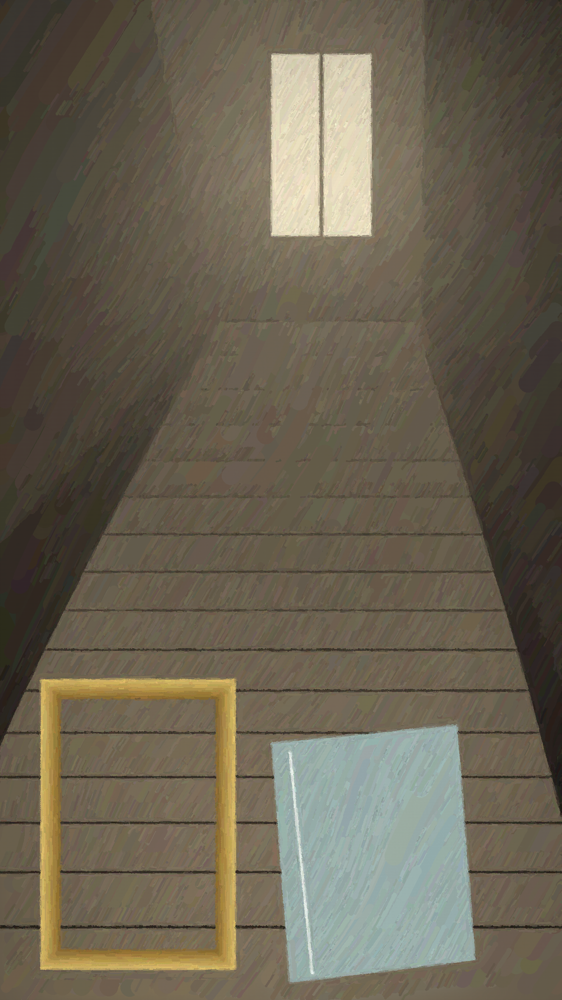
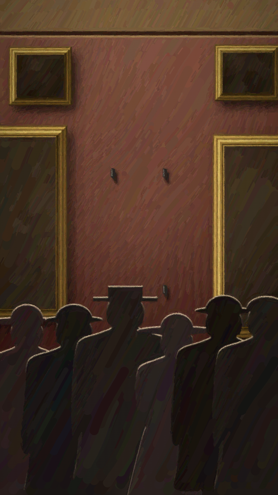
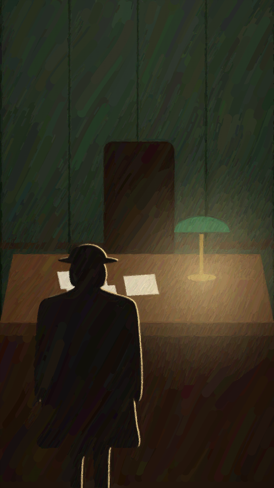
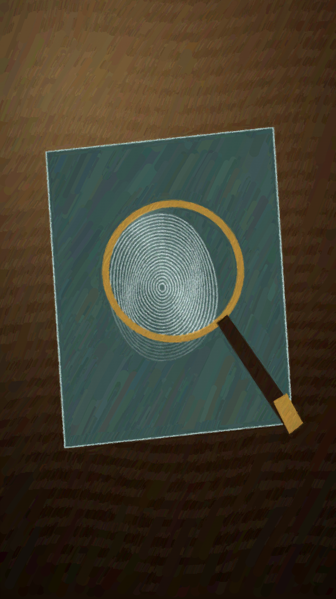
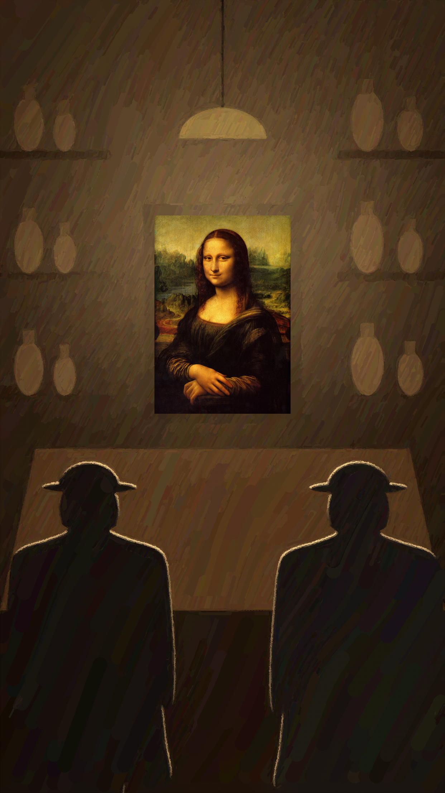
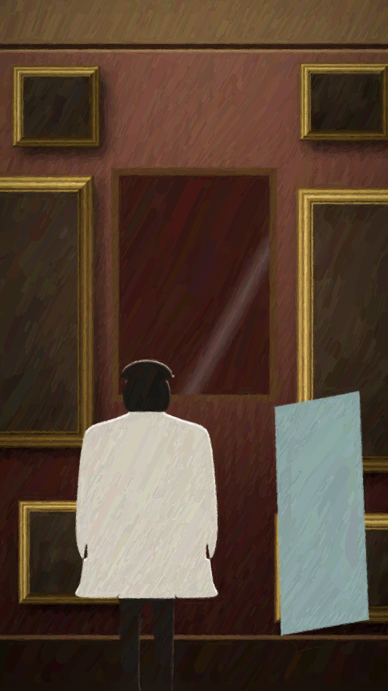
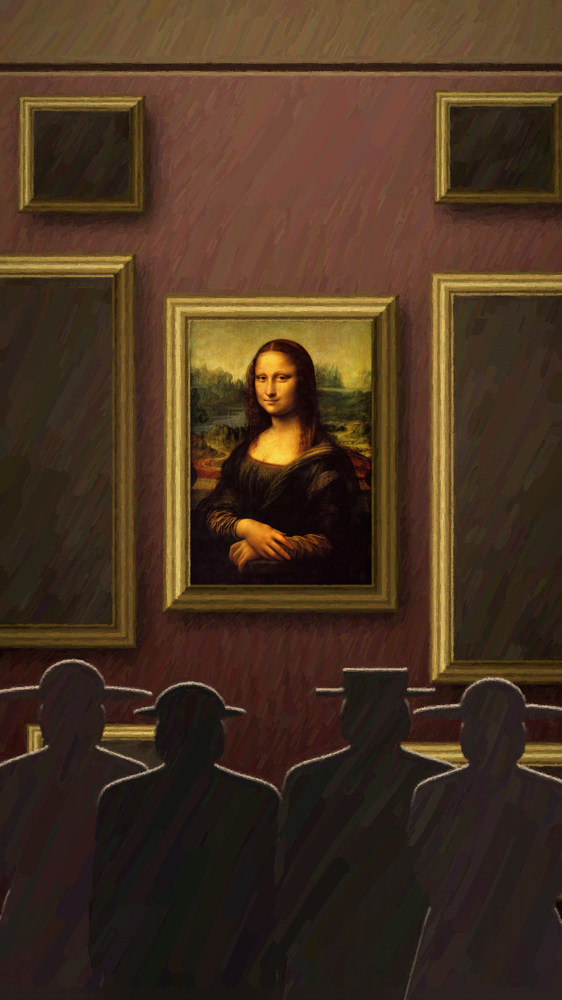

ILLUSTRATION
LOUVRE · 22 AOÛT 1911

ILLUSTRATION

ARCHIVE
Léonard de Vinci, La Joconde · Musée du Louvre
QUI L’A VOLÉE ?

ILLUSTRATION
LOUIS BÉROUD, PEINTRE COPISTE

ILLUSTRATION

ILLUSTRATION

ILLUSTRATION
RÉOUVERTURE DU LOUVRE

ILLUSTRATION
7 SEPTEMBRE 1911

ILLUSTRATION
PRISON DE LA SANTÉ
FAUSSE PISTE

ILLUSTRATION

ILLUSTRATION

ILLUSTRATION

ILLUSTRATION
1911 → 1913

CARTE SCHÉMATIQUE
DÉCEMBRE 1913

ILLUSTRATION

ILLUSTRATION
VINCENZO PERUGGIA, VITRIER

ILLUSTRATION

ILLUSTRATION

ILLUSTRATION
LUNDI 21 AOÛT 1911
ILLUSTRATION
ILLUSTRATION
FLORENCE, JUIN 1914
ARCHIVE
Léonard de Vinci, La Joconde · Musée du Louvre
EN FRANCE DEPUIS LE XVIe SIÈCLE

ILLUSTRATION
4 JANVIER 1914

ARCHIVE
La Joconde (détail) · Musée du Louvre
ILLUSTRATION
LOUVRE · 22 AOÛT 1911
Le 22 août 1911,
au Louvre, il ne reste
que quatre crochets.
La Joconde a disparu.
Qui a pu la sortir
du musée ?
Ce matin-là,
le peintre Louis Béroud
vient la copier.
Les gardiens la croient
chez le photographe.
Mais dans un escalier,
on retrouve son cadre vide.
Une semaine plus tard,
la foule vient voir…
le mur vide.
Le 7 septembre,
on emprisonne même
le poète Apollinaire.
Il passe près d’une semaine
à la Santé.
Fausse piste.
Pourtant, un indice
reste sur la vitre :
une empreinte de pouce.
Le voleur est déjà
fiché par la police.
Personne ne fait
le rapprochement.
Plus de deux ans passent.
Le tableau dort
dans une chambre
parisienne.
En décembre 1913, un homme
le propose à un antiquaire
de Florence.
L’antiquaire fait venir
le directeur des Offices :
c’est bien la Joconde.
Le vendeur est arrêté.
Il s’appelle
Vincenzo Peruggia,
un vitrier italien.
Au Louvre,
il avait travaillé
sur la vitrine
de la Joconde.
Un lundi de fermeture,
en blouse d’ouvrier,
il avait décroché
le tableau.
Le cadre, il l’avait laissé
dans l’escalier.
À son procès, il dit avoir
voulu la rendre à l’Italie.
Elle était pourtant
en France depuis
le seizième siècle.
Le 4 janvier 1914,
la Joconde retrouve
le Louvre.
Pour beaucoup d’historiens,
ce vol l’a rendue célèbre
dans le monde entier.
Tout est parti
de quatre crochets
sur un mur vide.